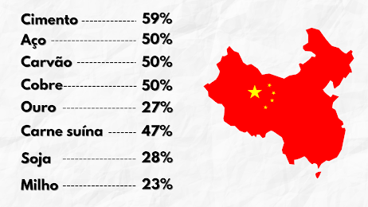

A PARTICIPAÇÃO CHINESA NO CONSUMO GLOBAL DE COMMODITIES
A economia chinesa quadriplicou de tamanho nas últimas 3 décadas, caminhando para se tornar a maior do mundo nos próximos anos.
Para sustentar seu crescimento o país constrói gigantescas obras de infraestrutura, aumenta o ritmo de sua indústria e o consumo de sua grande população, levando uma demanda única no mundo de commodities minerais e agrícolas.
O governo chinês projeta um crescimento de 6% para este ano, retomando o ritmo anterior a 2020 rumo a uma nova década de pujança econômica.
Com base nisto, setores como o do agronegócio aumentam sua produção para dar conta de abastecer o apetite chinês, enquanto projetos de mineração de todos os tipos surgem ao redor do mundo de olho nesse poderoso comprador.
Abaixo apresentaremos um pouco dessa participação chinesa no consumo GLOBAL de commodities:
E uma coisa interessante para a nossa nação é que o Brasil é o 27º país que mais exporta no mundo e nossas exportações estão tradicionalmente ligadas à commodities. Os 10 maiores itens da cesta de exportação brasileira registraram mais de 100 bilhões de dólares e o total das exportações foi de 209 bilhões de dólares, contra 159 bilhões em importações. Em um ano com produção interrompida, os produtos manufaturados ficaram de fora do top 10, evidenciando nossa vocação de exportador de commodities. Os principais destinos das exportações brasileiras foram:
- China
- Estados Unidos
- Países Baixos
- Argentina
- Japão
- Chile
- México
- Alemanha
- Espanha
- Coreia do Sul